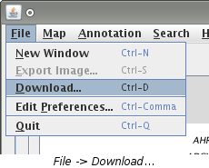
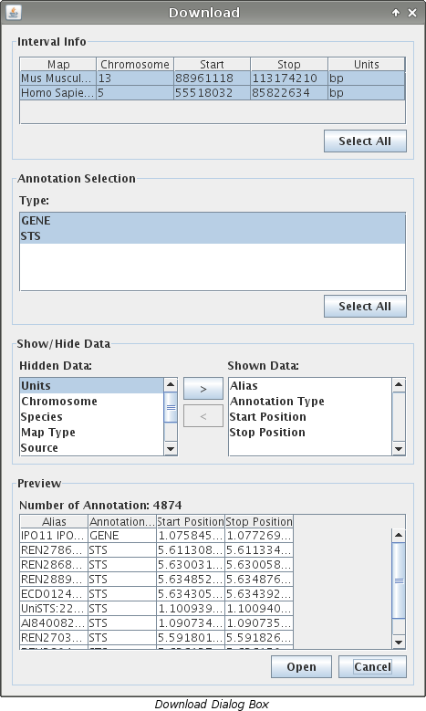
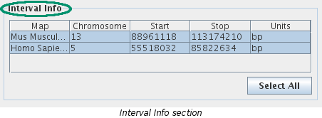
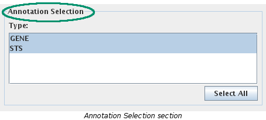
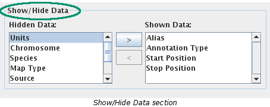
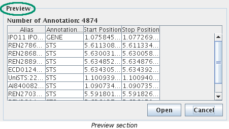

Only loaded annotation can be downloaded so before you follow the steps, make sure that everything you want to download is loaded. For help on loading a map visit the load a map page and for help on loading annotation visit the load annotation page.





The "Preview" section will dynamically update as you are making your choices described in steps 4, 5, and 6, above. It will contain a representative view of what the file would contain given the chosen information.
